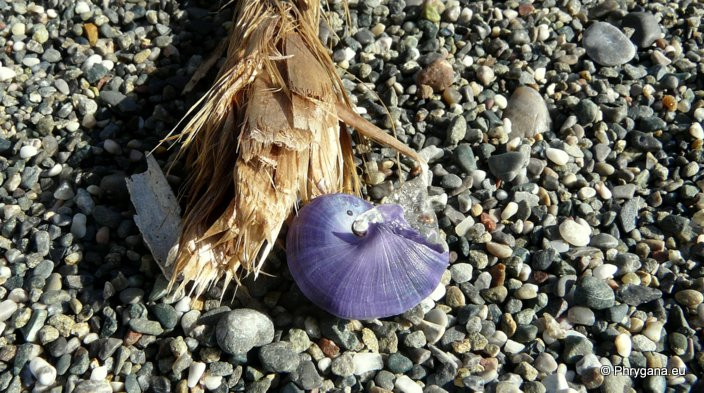
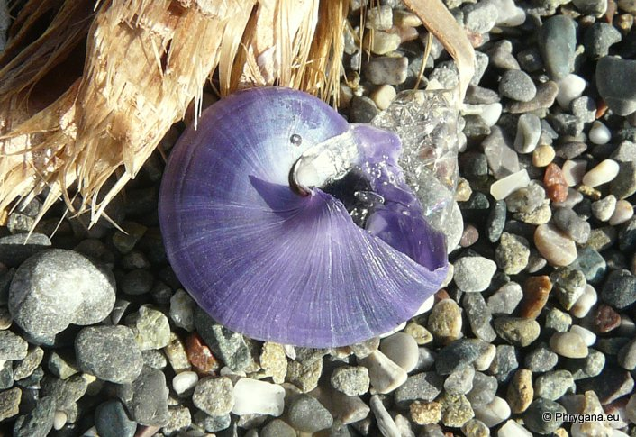
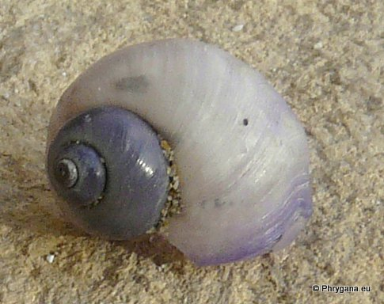
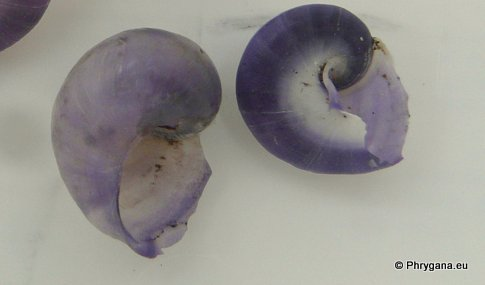

| PHRYGANA | Fauna | Flora | Galles | liste des espèces |
contact -
info - commentaires phrygana1 (at) gmail.com |
| Particularités crétoises | nouveautés | Mines | ressources naturelles |
| Janthina globosa Swainson 1822 |
| 425 | Fauna | CAENOGRASTROPODA | JANTHINIDAE | Janthina Röding 1798 |
|
 Janthina globosa épave à Agios Giorgos plage (Mlemabes) 12 décembre 2012 |
| Synonyme: Janthina prolongata Blainville 1822 |
| La coquille est de couleur bleu violacé, fine, à 3 - 4 spires et une large ouverture; le corps est gris bleuâtre-noirâtre; 15 - 30 (-35) mm de largeur x 1.8 - 2?4 mm de hauteur; large ouverture |
| Les escargots vivent à la surface des mes et océans, flottant grâce à la fabrication d'un 'radeau' par de la chitine transparente entourant des bulles d'air: les escargots sont fixés à ce radeau par leur pied. |
| Espèce carnivore: le Janthina globosa se nourrit des animaux (plus particulièrement des méduses) vivant à la surface de l'eau |
| Statut en Grèce: présent |
| Biotopes en Crète: mer Méditerranée |
| Altitude: 0.0 m |
| Distribution: les mers tropicales et subtropicales dont la mer Méditerranée, l'océan Pacifique, l'Atlantique du Portugal à l'Afrique du Sud |
|
 Janthina globosa épave à Agios Giorgos plage (Mlemabes) 12 décembre 2012 |
|

 Janthina globosa épaves trouvées sur la plage de Tymbaki - Pirghiotisa 02 décembre 2012 |
| 15 décembre 2012 |
| © paul fontaine -- © Phrygana.eu 2007 -- 2013 |